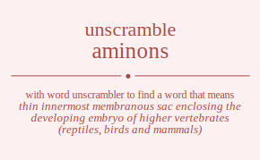

The word found after unscrambling aminons means that thin innermost membranous sac enclosing the developing embryo of higher vertebrates (reptiles, birds and mammals), .

The word found after unscrambling aminons means that thin innermost membranous sac enclosing the developing embryo of higher vertebrates (reptiles, birds and mammals), .
You can also find solutions for different combinations of letters in aminons like aminons aminosn aminnos aminnso aminson aminsno amionns amionsn amionns amionsn amiosnn amiosnn aminnos aminnso aminons aminosn aminsno aminson amisnon amisnno amisonn amisonn amisnno amisnon amnions amniosn amninos amninso amnison amnisno amnoins amnoisn amnonis amnonsi amnosin amnosni amnnios amnniso amnnois amnnosi amnnsio amnnsoi amnsion amnsino amnsoin amnsoni amnsnio amnsnoi amoinns amoinsn amoinns amoinsn amoisnn amoisnn amonins amonisn amonnis amonnsi amonsin amonsni amonins amonisn amonnis amonnsi amonsin amonsni amosinn amosinn amosnin amosnni amosnin amosnni amninos amninso amnions amniosn amnisno amnison amnnios amnniso amnnois amnnosi amnnsio amnnsoi amnoins amnoisn amnonis amnonsi amnosin amnosni amnsino amnsion amnsnio amnsnoi amnsoin amnsoni amsinon amsinno amsionn amsionn amsinno amsinon amsnion amsnino amsnoin amsnoni amsnnio amsnnoi amsoinn amsoinn amsonin amsonni amsonin amsonni amsnino amsnion amsnnio amsnnoi amsnoin amsnoni aimnons aimnosn aimnnos aimnnso aimnson aimnsno aimonns aimonsn aimonns aimonsn aimosnn aimosnn aimnnos aimnnso aimnons aimnosn aimnsno aimnson aimsnon aimsnno aimsonn aimsonn aimsnno aimsnon ainmons ainmosn ainmnos ainmnso ainmson ainmsno ainomns ainomsn ainonms ainonsm ainosmn ainosnm ainnmos ainnmso ainnoms ainnosm ainnsmo ainnsom ainsmon ainsmno ainsomn ainsonm ainsnmo ainsnom aiomnns aiomnsn aiomnns aiomnsn aiomsnn aiomsnn aionmns aionmsn aionnms aionnsm aionsmn aionsnm aionmns aionmsn aionnms aionnsm aionsmn aionsnm aiosmnn aiosmnn aiosnmn aiosnnm aiosnmn aiosnnm ainmnos ainmnso ainmons ainmosn ainmsno ainmson ainnmos ainnmso ainnoms ainnosm ainnsmo ainnsom ainomns ainomsn ainonms ainonsm ainosmn ainosnm ainsmno ainsmon ainsnmo ainsnom ainsomn ainsonm aismnon aismnno aismonn aismonn aismnno aismnon aisnmon aisnmno aisnomn aisnonm aisnnmo aisnnom aisomnn aisomnn aisonmn aisonnm aisonmn aisonnm aisnmno aisnmon aisnnmo aisnnom aisnomn aisnonm anmions anmiosn anminos anminso anmison anmisno anmoins anmoisn anmonis anmonsi anmosin anmosni anmnios anmniso anmnois anmnosi anmnsio anmnsoi anmsion anmsino anmsoin anmsoni anmsnio anmsnoi animons animosn animnos animnso animson animsno aniomns aniomsn anionms anionsm aniosmn aniosnm aninmos aninmso aninoms aninosm aninsmo aninsom anismon anismno anisomn anisonm anisnmo anisnom anomins anomisn anomnis anomnsi anomsin anomsni anoimns anoimsn anoinms anoinsm anoismn anoisnm anonmis anonmsi anonims anonism anonsmi anonsim anosmin anosmni anosimn anosinm anosnmi anosnim annmios annmiso annmois annmosi annmsio annmsoi annimos annimso annioms anniosm annismo annisom annomis annomsi annoims annoism annosmi annosim annsmio annsmoi annsimo annsiom annsomi annsoim ansmion ansmino ansmoin ansmoni ansmnio ansmnoi ansimon ansimno ansiomn ansionm ansinmo ansinom ansomin ansomni ansoimn ansoinm ansonmi ansonim ansnmio ansnmoi ansnimo ansniom ansnomi ansnoim aominns aominsn aominns aominsn aomisnn aomisnn aomnins aomnisn aomnnis aomnnsi aomnsin aomnsni aomnins aomnisn aomnnis aomnnsi aomnsin aomnsni aomsinn aomsinn aomsnin aomsnni aomsnin aomsnni aoimnns aoimnsn aoimnns aoimnsn aoimsnn aoimsnn aoinmns aoinmsn aoinnms aoinnsm aoinsmn aoinsnm aoinmns aoinmsn aoinnms aoinnsm aoinsmn aoinsnm aoismnn aoismnn aoisnmn aoisnnm aoisnmn aoisnnm aonmins aonmisn aonmnis aonmnsi aonmsin aonmsni aonimns aonimsn aoninms aoninsm aonismn aonisnm aonnmis aonnmsi aonnims aonnism aonnsmi aonnsim aonsmin aonsmni aonsimn aonsinm aonsnmi aonsnim aonmins aonmisn aonmnis aonmnsi aonmsin aonmsni aonimns aonimsn aoninms aoninsm aonismn aonisnm aonnmis aonnmsi aonnims aonnism aonnsmi aonnsim aonsmin aonsmni aonsimn aonsinm aonsnmi aonsnim aosminn aosminn aosmnin aosmnni aosmnin aosmnni aosimnn aosimnn aosinmn aosinnm aosinmn aosinnm aosnmin aosnmni aosnimn aosninm aosnnmi aosnnim aosnmin aosnmni aosnimn aosninm aosnnmi aosnnim anminos anminso anmions anmiosn anmisno anmison anmnios anmniso anmnois anmnosi anmnsio anmnsoi anmoins anmoisn anmonis anmonsi anmosin anmosni anmsino anmsion anmsnio anmsnoi anmsoin anmsoni animnos animnso animons animosn animsno animson aninmos aninmso aninoms aninosm aninsmo aninsom aniomns aniomsn anionms anionsm aniosmn aniosnm anismno anismon anisnmo anisnom anisomn anisonm annmios annmiso annmois annmosi annmsio annmsoi annimos annimso annioms anniosm annismo annisom annomis annomsi annoims annoism annosmi annosim annsmio annsmoi annsimo annsiom annsomi annsoim anomins anomisn anomnis anomnsi anomsin anomsni anoimns anoimsn anoinms anoinsm anoismn anoisnm anonmis anonmsi anonims anonism anonsmi anonsim anosmin anosmni anosimn anosinm anosnmi anosnim ansmino ansmion ansmnio ansmnoi ansmoin ansmoni ansimno ansimon ansinmo ansinom ansiomn ansionm ansnmio ansnmoi ansnimo ansniom ansnomi ansnoim ansomin ansomni ansoimn ansoinm ansonmi ansonim asminon asminno asmionn asmionn asminno asminon asmnion asmnino asmnoin asmnoni asmnnio asmnnoi asmoinn asmoinn asmonin asmonni asmonin asmonni asmnino asmnion asmnnio asmnnoi asmnoin asmnoni asimnon asimnno asimonn asimonn asimnno asimnon asinmon asinmno asinomn asinonm asinnmo asinnom asiomnn asiomnn asionmn asionnm asionmn asionnm asinmno asinmon asinnmo asinnom asinomn asinonm asnmion asnmino asnmoin asnmoni asnmnio asnmnoi asnimon asnimno asniomn asnionm asninmo asninom asnomin asnomni asnoimn asnoinm asnonmi asnonim asnnmio asnnmoi asnnimo asnniom asnnomi asnnoim asominn asominn asomnin asomnni asomnin asomnni asoimnn asoimnn asoinmn asoinnm asoinmn asoinnm asonmin asonmni asonimn asoninm asonnmi asonnim asonmin asonmni asonimn asoninm asonnmi asonnim asnmino asnmion asnmnio asnmnoi asnmoin asnmoni asnimno asnimon asninmo asninom asniomn asnionm asnnmio asnnmoi asnnimo asnniom asnnomi asnnoim asnomin asnomni asnoimn asnoinm asnonmi asnonim mainons mainosn mainnos mainnso mainson mainsno maionns maionsn maionns maionsn maiosnn maiosnn mainnos mainnso mainons mainosn mainsno mainson maisnon maisnno maisonn maisonn maisnno maisnon manions maniosn maninos maninso manison manisno manoins manoisn manonis manonsi manosin manosni mannios manniso mannois mannosi mannsio mannsoi mansion mansino mansoin mansoni mansnio mansnoi maoinns maoinsn maoinns maoinsn maoisnn maoisnn maonins maonisn maonnis maonnsi maonsin maonsni maonins maonisn maonnis maonnsi maonsin maonsni maosinn maosinn maosnin maosnni maosnin maosnni maninos maninso manions maniosn manisno manison mannios manniso mannois mannosi mannsio mannsoi manoins manoisn manonis manonsi manosin manosni mansino mansion mansnio mansnoi mansoin mansoni masinon masinno masionn masionn masinno masinon masnion masnino masnoin masnoni masnnio masnnoi masoinn masoinn masonin masonni masonin masonni masnino masnion masnnio masnnoi masnoin masnoni mianons mianosn miannos miannso mianson miansno miaonns miaonsn miaonns miaonsn miaosnn miaosnn miannos miannso mianons mianosn miansno mianson miasnon miasnno miasonn miasonn miasnno miasnon minaons minaosn minanos minanso minason minasno minoans minoasn minonas minonsa minosan minosna minnaos minnaso minnoas minnosa minnsao minnsoa minsaon minsano minsoan minsona minsnao minsnoa mioanns mioansn mioanns mioansn mioasnn mioasnn mionans mionasn mionnas mionnsa mionsan mionsna mionans mionasn mionnas mionnsa mionsan mionsna miosann miosann miosnan miosnna miosnan miosnna minanos minanso minaons minaosn minasno minason minnaos minnaso minnoas minnosa minnsao minnsoa minoans minoasn minonas minonsa minosan minosna minsano minsaon minsnao minsnoa minsoan minsona misanon misanno misaonn misaonn misanno misanon misnaon misnano misnoan misnona misnnao misnnoa misoann misoann misonan misonna misonan misonna misnano misnaon misnnao misnnoa misnoan misnona mnaions mnaiosn mnainos mnainso mnaison mnaisno mnaoins mnaoisn mnaonis mnaonsi mnaosin mnaosni mnanios mnaniso mnanois mnanosi mnansio mnansoi mnasion mnasino mnasoin mnasoni mnasnio mnasnoi mniaons mniaosn mnianos mnianso mniason mniasno mnioans mnioasn mnionas mnionsa mniosan mniosna mninaos mninaso mninoas mninosa mninsao mninsoa mnisaon mnisano mnisoan mnisona mnisnao mnisnoa mnoains mnoaisn mnoanis mnoansi mnoasin mnoasni mnoians mnoiasn mnoinas mnoinsa mnoisan mnoisna mnonais mnonasi mnonias mnonisa mnonsai mnonsia mnosain mnosani mnosian mnosina mnosnai mnosnia mnnaios mnnaiso mnnaois mnnaosi mnnasio mnnasoi mnniaos mnniaso mnnioas mnniosa mnnisao mnnisoa mnnoais mnnoasi mnnoias mnnoisa mnnosai mnnosia mnnsaio mnnsaoi mnnsiao mnnsioa mnnsoai mnnsoia mnsaion mnsaino mnsaoin mnsaoni mnsanio mnsanoi mnsiaon mnsiano mnsioan mnsiona mnsinao mnsinoa mnsoain mnsoani mnsoian mnsoina mnsonai mnsonia mnsnaio mnsnaoi mnsniao mnsnioa mnsnoai mnsnoia moainns moainsn moainns moainsn moaisnn moaisnn moanins moanisn moannis moannsi moansin moansni moanins moanisn moannis moannsi moansin moansni moasinn moasinn moasnin moasnni moasnin moasnni moianns moiansn moianns moiansn moiasnn moiasnn moinans moinasn moinnas moinnsa moinsan moinsna moinans moinasn moinnas moinnsa moinsan moinsna moisann moisann moisnan moisnna moisnan moisnna monains monaisn monanis monansi monasin monasni monians moniasn moninas moninsa monisan monisna monnais monnasi monnias monnisa monnsai monnsia monsain monsani monsian monsina monsnai monsnia monains monaisn monanis monansi monasin monasni monians moniasn moninas moninsa monisan monisna monnais monnasi monnias monnisa monnsai monnsia monsain monsani monsian monsina monsnai monsnia mosainn mosainn mosanin mosanni mosanin mosanni mosiann mosiann mosinan mosinna mosinan mosinna mosnain mosnani mosnian mosnina mosnnai mosnnia mosnain mosnani mosnian mosnina mosnnai mosnnia mnainos mnainso mnaions mnaiosn mnaisno mnaison mnanios mnaniso mnanois mnanosi mnansio mnansoi mnaoins mnaoisn mnaonis mnaonsi mnaosin mnaosni mnasino mnasion mnasnio mnasnoi mnasoin mnasoni mnianos mnianso mniaons mniaosn mniasno mniason mninaos mninaso mninoas mninosa mninsao mninsoa mnioans mnioasn mnionas mnionsa mniosan mniosna mnisano mnisaon mnisnao mnisnoa mnisoan mnisona mnnaios mnnaiso mnnaois mnnaosi mnnasio mnnasoi mnniaos mnniaso mnnioas mnniosa mnnisao mnnisoa mnnoais mnnoasi mnnoias mnnoisa mnnosai mnnosia mnnsaio mnnsaoi mnnsiao mnnsioa mnnsoai mnnsoia mnoains mnoaisn mnoanis mnoansi mnoasin mnoasni mnoians mnoiasn mnoinas mnoinsa mnoisan mnoisna mnonais mnonasi mnonias mnonisa mnonsai mnonsia mnosain mnosani mnosian mnosina mnosnai mnosnia mnsaino mnsaion mnsanio mnsanoi mnsaoin mnsaoni mnsiano mnsiaon mnsinao mnsinoa mnsioan mnsiona mnsnaio mnsnaoi mnsniao mnsnioa mnsnoai mnsnoia mnsoain mnsoani mnsoian mnsoina mnsonai mnsonia msainon msainno msaionn msaionn msainno msainon msanion msanino msanoin msanoni msannio msannoi msaoinn msaoinn msaonin msaonni msaonin msaonni msanino msanion msannio msannoi msanoin msanoni msianon msianno msiaonn msiaonn msianno msianon msinaon msinano msinoan msinona msinnao msinnoa msioann msioann msionan msionna msionan msionna msinano msinaon msinnao msinnoa msinoan msinona msnaion msnaino msnaoin msnaoni msnanio msnanoi msniaon msniano msnioan msniona msninao msninoa msnoain msnoani msnoian msnoina msnonai msnonia msnnaio msnnaoi msnniao msnnioa msnnoai msnnoia msoainn msoainn msoanin msoanni msoanin msoanni msoiann msoiann msoinan msoinna msoinan msoinna msonain msonani msonian msonina msonnai msonnia msonain msonani msonian msonina msonnai msonnia msnaino msnaion msnanio msnanoi msnaoin msnaoni msniano msniaon msninao msninoa msnioan msniona msnnaio msnnaoi msnniao msnnioa msnnoai msnnoia msnoain msnoani msnoian msnoina msnonai msnonia iamnons iamnosn iamnnos iamnnso iamnson iamnsno iamonns iamonsn iamonns iamonsn iamosnn iamosnn iamnnos iamnnso iamnons iamnosn iamnsno iamnson iamsnon iamsnno iamsonn iamsonn iamsnno iamsnon ianmons ianmosn ianmnos ianmnso ianmson ianmsno ianomns ianomsn ianonms ianonsm ianosmn ianosnm iannmos iannmso iannoms iannosm iannsmo iannsom iansmon iansmno iansomn iansonm iansnmo iansnom iaomnns iaomnsn iaomnns iaomnsn iaomsnn iaomsnn iaonmns iaonmsn iaonnms iaonnsm iaonsmn iaonsnm iaonmns iaonmsn iaonnms iaonnsm iaonsmn iaonsnm iaosmnn iaosmnn iaosnmn iaosnnm iaosnmn iaosnnm ianmnos ianmnso ianmons ianmosn ianmsno ianmson iannmos iannmso iannoms iannosm iannsmo iannsom ianomns ianomsn ianonms ianonsm ianosmn ianosnm iansmno iansmon iansnmo iansnom iansomn iansonm iasmnon iasmnno iasmonn iasmonn iasmnno iasmnon iasnmon iasnmno iasnomn iasnonm iasnnmo iasnnom iasomnn iasomnn iasonmn iasonnm iasonmn iasonnm iasnmno iasnmon iasnnmo iasnnom iasnomn iasnonm imanons imanosn imannos imannso imanson imansno imaonns imaonsn imaonns imaonsn imaosnn imaosnn imannos imannso imanons imanosn imansno imanson imasnon imasnno imasonn imasonn imasnno imasnon imnaons imnaosn imnanos imnanso imnason imnasno imnoans imnoasn imnonas imnonsa imnosan imnosna imnnaos imnnaso imnnoas imnnosa imnnsao imnnsoa imnsaon imnsano imnsoan imnsona imnsnao imnsnoa imoanns imoansn imoanns imoansn imoasnn imoasnn imonans imonasn imonnas imonnsa imonsan imonsna imonans imonasn imonnas imonnsa imonsan imonsna imosann imosann imosnan imosnna imosnan imosnna imnanos imnanso imnaons imnaosn imnasno imnason imnnaos imnnaso imnnoas imnnosa imnnsao imnnsoa imnoans imnoasn imnonas imnonsa imnosan imnosna imnsano imnsaon imnsnao imnsnoa imnsoan imnsona imsanon imsanno imsaonn imsaonn imsanno imsanon imsnaon imsnano imsnoan imsnona imsnnao imsnnoa imsoann imsoann imsonan imsonna imsonan imsonna imsnano imsnaon imsnnao imsnnoa imsnoan imsnona inamons inamosn inamnos inamnso inamson inamsno inaomns inaomsn inaonms inaonsm inaosmn inaosnm inanmos inanmso inanoms inanosm inansmo inansom inasmon inasmno inasomn inasonm inasnmo inasnom inmaons inmaosn inmanos inmanso inmason inmasno inmoans inmoasn inmonas inmonsa inmosan inmosna inmnaos inmnaso inmnoas inmnosa inmnsao inmnsoa inmsaon inmsano inmsoan inmsona inmsnao inmsnoa inoamns inoamsn inoanms inoansm inoasmn inoasnm inomans inomasn inomnas inomnsa inomsan inomsna inonams inonasm inonmas inonmsa inonsam inonsma inosamn inosanm inosman inosmna inosnam inosnma innamos innamso innaoms innaosm innasmo innasom innmaos innmaso innmoas innmosa innmsao innmsoa innoams innoasm innomas innomsa innosam innosma innsamo innsaom innsmao innsmoa innsoam innsoma insamon insamno insaomn insaonm insanmo insanom insmaon insmano insmoan insmona insmnao insmnoa insoamn insoanm insoman insomna insonam insonma insnamo insnaom insnmao insnmoa insnoam insnoma ioamnns ioamnsn ioamnns ioamnsn ioamsnn ioamsnn ioanmns ioanmsn ioannms ioannsm ioansmn ioansnm ioanmns ioanmsn ioannms ioannsm ioansmn ioansnm ioasmnn ioasmnn ioasnmn ioasnnm ioasnmn ioasnnm iomanns iomansn iomanns iomansn iomasnn iomasnn iomnans iomnasn iomnnas iomnnsa iomnsan iomnsna iomnans iomnasn iomnnas iomnnsa iomnsan iomnsna iomsann iomsann iomsnan iomsnna iomsnan iomsnna ionamns ionamsn ionanms ionansm ionasmn ionasnm ionmans ionmasn ionmnas ionmnsa ionmsan ionmsna ionnams ionnasm ionnmas ionnmsa ionnsam ionnsma ionsamn ionsanm ionsman ionsmna ionsnam ionsnma ionamns ionamsn ionanms ionansm ionasmn ionasnm ionmans ionmasn ionmnas ionmnsa ionmsan ionmsna ionnams ionnasm ionnmas ionnmsa ionnsam ionnsma ionsamn ionsanm ionsman ionsmna ionsnam ionsnma iosamnn iosamnn iosanmn iosannm iosanmn iosannm iosmann iosmann iosmnan iosmnna iosmnan iosmnna iosnamn iosnanm iosnman iosnmna iosnnam iosnnma iosnamn iosnanm iosnman iosnmna iosnnam iosnnma inamnos inamnso inamons inamosn inamsno inamson inanmos inanmso inanoms inanosm inansmo inansom inaomns inaomsn inaonms inaonsm inaosmn inaosnm inasmno inasmon inasnmo inasnom inasomn inasonm inmanos inmanso inmaons inmaosn inmasno inmason inmnaos inmnaso inmnoas inmnosa inmnsao inmnsoa inmoans inmoasn inmonas inmonsa inmosan inmosna inmsano inmsaon inmsnao inmsnoa inmsoan inmsona innamos innamso innaoms innaosm innasmo innasom innmaos innmaso innmoas innmosa innmsao innmsoa innoams innoasm innomas innomsa innosam innosma innsamo innsaom innsmao innsmoa innsoam innsoma inoamns inoamsn inoanms inoansm inoasmn inoasnm inomans inomasn inomnas inomnsa inomsan inomsna inonams inonasm inonmas inonmsa inonsam inonsma inosamn inosanm inosman inosmna inosnam inosnma insamno insamon insanmo insanom insaomn insaonm insmano insmaon insmnao insmnoa insmoan insmona insnamo insnaom insnmao insnmoa insnoam insnoma insoamn insoanm insoman insomna insonam insonma isamnon isamnno isamonn isamonn isamnno isamnon isanmon isanmno isanomn isanonm isannmo isannom isaomnn isaomnn isaonmn isaonnm isaonmn isaonnm isanmno isanmon isannmo isannom isanomn isanonm ismanon ismanno ismaonn ismaonn ismanno ismanon ismnaon ismnano ismnoan ismnona ismnnao ismnnoa ismoann ismoann ismonan ismonna ismonan ismonna ismnano ismnaon ismnnao ismnnoa ismnoan ismnona isnamon isnamno isnaomn isnaonm isnanmo isnanom isnmaon isnmano isnmoan isnmona isnmnao isnmnoa isnoamn isnoanm isnoman isnomna isnonam isnonma isnnamo isnnaom isnnmao isnnmoa isnnoam isnnoma isoamnn isoamnn isoanmn isoannm isoanmn isoannm isomann isomann isomnan isomnna isomnan isomnna isonamn isonanm isonman isonmna isonnam isonnma isonamn isonanm isonman isonmna isonnam isonnma isnamno isnamon isnanmo isnanom isnaomn isnaonm isnmano isnmaon isnmnao isnmnoa isnmoan isnmona isnnamo isnnaom isnnmao isnnmoa isnnoam isnnoma isnoamn isnoanm isnoman isnomna isnonam isnonma namions namiosn naminos naminso namison namisno namoins namoisn namonis namonsi namosin namosni namnios namniso namnois namnosi namnsio namnsoi namsion namsino namsoin namsoni namsnio namsnoi naimons naimosn naimnos naimnso naimson naimsno naiomns naiomsn naionms naionsm naiosmn naiosnm nainmos nainmso nainoms nainosm nainsmo nainsom naismon naismno naisomn naisonm naisnmo naisnom naomins naomisn naomnis naomnsi naomsin naomsni naoimns naoimsn naoinms naoinsm naoismn naoisnm naonmis naonmsi naonims naonism naonsmi naonsim naosmin naosmni naosimn naosinm naosnmi naosnim nanmios nanmiso nanmois nanmosi nanmsio nanmsoi nanimos nanimso nanioms naniosm nanismo nanisom nanomis nanomsi nanoims nanoism nanosmi nanosim nansmio nansmoi nansimo nansiom nansomi nansoim nasmion nasmino nasmoin nasmoni nasmnio nasmnoi nasimon nasimno nasiomn nasionm nasinmo nasinom nasomin nasomni nasoimn nasoinm nasonmi nasonim nasnmio nasnmoi nasnimo nasniom nasnomi nasnoim nmaions nmaiosn nmainos nmainso nmaison nmaisno nmaoins nmaoisn nmaonis nmaonsi nmaosin nmaosni nmanios nmaniso nmanois nmanosi nmansio nmansoi nmasion nmasino nmasoin nmasoni nmasnio nmasnoi nmiaons nmiaosn nmianos nmianso nmiason nmiasno nmioans nmioasn nmionas nmionsa nmiosan nmiosna nminaos nminaso nminoas nminosa nminsao nminsoa nmisaon nmisano nmisoan nmisona nmisnao nmisnoa nmoains nmoaisn nmoanis nmoansi nmoasin nmoasni nmoians nmoiasn nmoinas nmoinsa nmoisan nmoisna nmonais nmonasi nmonias nmonisa nmonsai nmonsia nmosain nmosani nmosian nmosina nmosnai nmosnia nmnaios nmnaiso nmnaois nmnaosi nmnasio nmnasoi nmniaos nmniaso nmnioas nmniosa nmnisao nmnisoa nmnoais nmnoasi nmnoias nmnoisa nmnosai nmnosia nmnsaio nmnsaoi nmnsiao nmnsioa nmnsoai nmnsoia nmsaion nmsaino nmsaoin nmsaoni nmsanio nmsanoi nmsiaon nmsiano nmsioan nmsiona nmsinao nmsinoa nmsoain nmsoani nmsoian nmsoina nmsonai nmsonia nmsnaio nmsnaoi nmsniao nmsnioa nmsnoai nmsnoia niamons niamosn niamnos niamnso niamson niamsno niaomns niaomsn niaonms niaonsm niaosmn niaosnm nianmos nianmso nianoms nianosm niansmo niansom niasmon niasmno niasomn niasonm niasnmo niasnom nimaons nimaosn nimanos nimanso nimason nimasno nimoans nimoasn nimonas nimonsa nimosan nimosna nimnaos nimnaso nimnoas nimnosa nimnsao nimnsoa nimsaon nimsano nimsoan nimsona nimsnao nimsnoa nioamns nioamsn nioanms nioansm nioasmn nioasnm niomans niomasn niomnas niomnsa niomsan niomsna nionams nionasm nionmas nionmsa nionsam nionsma niosamn niosanm niosman niosmna niosnam niosnma ninamos ninamso ninaoms ninaosm ninasmo ninasom ninmaos ninmaso ninmoas ninmosa ninmsao ninmsoa ninoams ninoasm ninomas ninomsa ninosam ninosma ninsamo ninsaom ninsmao ninsmoa ninsoam ninsoma nisamon nisamno nisaomn nisaonm nisanmo nisanom nismaon nismano nismoan nismona nismnao nismnoa nisoamn nisoanm nisoman nisomna nisonam nisonma nisnamo nisnaom nisnmao nisnmoa nisnoam nisnoma noamins noamisn noamnis noamnsi noamsin noamsni noaimns noaimsn noainms noainsm noaismn noaisnm noanmis noanmsi noanims noanism noansmi noansim noasmin noasmni noasimn noasinm noasnmi noasnim nomains nomaisn nomanis nomansi nomasin nomasni nomians nomiasn nominas nominsa nomisan nomisna nomnais nomnasi nomnias nomnisa nomnsai nomnsia nomsain nomsani nomsian nomsina nomsnai nomsnia noiamns noiamsn noianms noiansm noiasmn noiasnm noimans noimasn noimnas noimnsa noimsan noimsna noinams noinasm noinmas noinmsa noinsam noinsma noisamn noisanm noisman noismna noisnam noisnma nonamis nonamsi nonaims nonaism nonasmi nonasim nonmais nonmasi nonmias nonmisa nonmsai nonmsia noniams noniasm nonimas nonimsa nonisam nonisma nonsami nonsaim nonsmai nonsmia nonsiam nonsima nosamin nosamni nosaimn nosainm nosanmi nosanim nosmain nosmani nosmian nosmina nosmnai nosmnia nosiamn nosianm nosiman nosimna nosinam nosinma nosnami nosnaim nosnmai nosnmia nosniam nosnima nnamios nnamiso nnamois nnamosi nnamsio nnamsoi nnaimos nnaimso nnaioms nnaiosm nnaismo nnaisom nnaomis nnaomsi nnaoims nnaoism nnaosmi nnaosim nnasmio nnasmoi nnasimo nnasiom nnasomi nnasoim nnmaios nnmaiso nnmaois nnmaosi nnmasio nnmasoi nnmiaos nnmiaso nnmioas nnmiosa nnmisao nnmisoa nnmoais nnmoasi nnmoias nnmoisa nnmosai nnmosia nnmsaio nnmsaoi nnmsiao nnmsioa nnmsoai nnmsoia nniamos nniamso nniaoms nniaosm nniasmo nniasom nnimaos nnimaso nnimoas nnimosa nnimsao nnimsoa nnioams nnioasm nniomas nniomsa nniosam nniosma nnisamo nnisaom nnismao nnismoa nnisoam nnisoma nnoamis nnoamsi nnoaims nnoaism nnoasmi nnoasim nnomais nnomasi nnomias nnomisa nnomsai nnomsia nnoiams nnoiasm nnoimas nnoimsa nnoisam nnoisma nnosami nnosaim nnosmai nnosmia nnosiam nnosima nnsamio nnsamoi nnsaimo nnsaiom nnsaomi nnsaoim nnsmaio nnsmaoi nnsmiao nnsmioa nnsmoai nnsmoia nnsiamo nnsiaom nnsimao nnsimoa nnsioam nnsioma nnsoami nnsoaim nnsomai nnsomia nnsoiam nnsoima nsamion nsamino nsamoin nsamoni nsamnio nsamnoi nsaimon nsaimno nsaiomn nsaionm nsainmo nsainom nsaomin nsaomni nsaoimn nsaoinm nsaonmi nsaonim nsanmio nsanmoi nsanimo nsaniom nsanomi nsanoim nsmaion nsmaino nsmaoin nsmaoni nsmanio nsmanoi nsmiaon nsmiano nsmioan nsmiona nsminao nsminoa nsmoain nsmoani nsmoian nsmoina nsmonai nsmonia nsmnaio nsmnaoi nsmniao nsmnioa nsmnoai nsmnoia nsiamon nsiamno nsiaomn nsiaonm nsianmo nsianom nsimaon nsimano nsimoan nsimona nsimnao nsimnoa nsioamn nsioanm nsioman nsiomna nsionam nsionma nsinamo nsinaom nsinmao nsinmoa nsinoam nsinoma nsoamin nsoamni nsoaimn nsoainm nsoanmi nsoanim nsomain nsomani nsomian nsomina nsomnai nsomnia nsoiamn nsoianm nsoiman nsoimna nsoinam nsoinma nsonami nsonaim nsonmai nsonmia nsoniam nsonima nsnamio nsnamoi nsnaimo nsnaiom nsnaomi nsnaoim nsnmaio nsnmaoi nsnmiao nsnmioa nsnmoai nsnmoia nsniamo nsniaom nsnimao nsnimoa nsnioam nsnioma nsnoami nsnoaim nsnomai nsnomia nsnoiam nsnoima oaminns oaminsn oaminns oaminsn oamisnn oamisnn oamnins oamnisn oamnnis oamnnsi oamnsin oamnsni oamnins oamnisn oamnnis oamnnsi oamnsin oamnsni oamsinn oamsinn oamsnin oamsnni oamsnin oamsnni oaimnns oaimnsn oaimnns oaimnsn oaimsnn oaimsnn oainmns oainmsn oainnms oainnsm oainsmn oainsnm oainmns oainmsn oainnms oainnsm oainsmn oainsnm oaismnn oaismnn oaisnmn oaisnnm oaisnmn oaisnnm oanmins oanmisn oanmnis oanmnsi oanmsin oanmsni oanimns oanimsn oaninms oaninsm oanismn oanisnm oannmis oannmsi oannims oannism oannsmi oannsim oansmin oansmni oansimn oansinm oansnmi oansnim oanmins oanmisn oanmnis oanmnsi oanmsin oanmsni oanimns oanimsn oaninms oaninsm oanismn oanisnm oannmis oannmsi oannims oannism oannsmi oannsim oansmin oansmni oansimn oansinm oansnmi oansnim oasminn oasminn oasmnin oasmnni oasmnin oasmnni oasimnn oasimnn oasinmn oasinnm oasinmn oasinnm oasnmin oasnmni oasnimn oasninm oasnnmi oasnnim oasnmin oasnmni oasnimn oasninm oasnnmi oasnnim omainns omainsn omainns omainsn omaisnn omaisnn omanins omanisn omannis omannsi omansin omansni omanins omanisn omannis omannsi omansin omansni omasinn omasinn omasnin omasnni omasnin omasnni omianns omiansn omianns omiansn omiasnn omiasnn ominans ominasn ominnas ominnsa ominsan ominsna ominans ominasn ominnas ominnsa ominsan ominsna omisann omisann omisnan omisnna omisnan omisnna omnains omnaisn omnanis omnansi omnasin omnasni omnians omniasn omninas omninsa omnisan omnisna omnnais omnnasi omnnias omnnisa omnnsai omnnsia omnsain omnsani omnsian omnsina omnsnai omnsnia omnains omnaisn omnanis omnansi omnasin omnasni omnians omniasn omninas omninsa omnisan omnisna omnnais omnnasi omnnias omnnisa omnnsai omnnsia omnsain omnsani omnsian omnsina omnsnai omnsnia omsainn omsainn omsanin omsanni omsanin omsanni omsiann omsiann omsinan omsinna omsinan omsinna omsnain omsnani omsnian omsnina omsnnai omsnnia omsnain omsnani omsnian omsnina omsnnai omsnnia oiamnns oiamnsn oiamnns oiamnsn oiamsnn oiamsnn oianmns oianmsn oiannms oiannsm oiansmn oiansnm oianmns oianmsn oiannms oiannsm oiansmn oiansnm oiasmnn oiasmnn oiasnmn oiasnnm oiasnmn oiasnnm oimanns oimansn oimanns oimansn oimasnn oimasnn oimnans oimnasn oimnnas oimnnsa oimnsan oimnsna oimnans oimnasn oimnnas oimnnsa oimnsan oimnsna oimsann oimsann oimsnan oimsnna oimsnan oimsnna oinamns oinamsn oinanms oinansm oinasmn oinasnm oinmans oinmasn oinmnas oinmnsa oinmsan oinmsna oinnams oinnasm oinnmas oinnmsa oinnsam oinnsma oinsamn oinsanm oinsman oinsmna oinsnam oinsnma oinamns oinamsn oinanms oinansm oinasmn oinasnm oinmans oinmasn oinmnas oinmnsa oinmsan oinmsna oinnams oinnasm oinnmas oinnmsa oinnsam oinnsma oinsamn oinsanm oinsman oinsmna oinsnam oinsnma oisamnn oisamnn oisanmn oisannm oisanmn oisannm oismann oismann oismnan oismnna oismnan oismnna oisnamn oisnanm oisnman oisnmna oisnnam oisnnma oisnamn oisnanm oisnman oisnmna oisnnam oisnnma onamins onamisn onamnis onamnsi onamsin onamsni onaimns onaimsn onainms onainsm onaismn onaisnm onanmis onanmsi onanims onanism onansmi onansim onasmin onasmni onasimn onasinm onasnmi onasnim onmains onmaisn onmanis onmansi onmasin onmasni onmians onmiasn onminas onminsa onmisan onmisna onmnais onmnasi onmnias onmnisa onmnsai onmnsia onmsain onmsani onmsian onmsina onmsnai onmsnia oniamns oniamsn onianms oniansm oniasmn oniasnm onimans onimasn onimnas onimnsa onimsan onimsna oninams oninasm oninmas oninmsa oninsam oninsma onisamn onisanm onisman onismna onisnam onisnma onnamis onnamsi onnaims onnaism onnasmi onnasim onnmais onnmasi onnmias onnmisa onnmsai onnmsia onniams onniasm onnimas onnimsa onnisam onnisma onnsami onnsaim onnsmai onnsmia onnsiam onnsima onsamin onsamni onsaimn onsainm onsanmi onsanim onsmain onsmani onsmian onsmina onsmnai onsmnia onsiamn onsianm onsiman onsimna onsinam onsinma onsnami onsnaim onsnmai onsnmia onsniam onsnima onamins onamisn onamnis onamnsi onamsin onamsni onaimns onaimsn onainms onainsm onaismn onaisnm onanmis onanmsi onanims onanism onansmi onansim onasmin onasmni onasimn onasinm onasnmi onasnim onmains onmaisn onmanis onmansi onmasin onmasni onmians onmiasn onminas onminsa onmisan onmisna onmnais onmnasi onmnias onmnisa onmnsai onmnsia onmsain onmsani onmsian onmsina onmsnai onmsnia oniamns oniamsn onianms oniansm oniasmn oniasnm onimans onimasn onimnas onimnsa onimsan onimsna oninams oninasm oninmas oninmsa oninsam oninsma onisamn onisanm onisman onismna onisnam onisnma onnamis onnamsi onnaims onnaism onnasmi onnasim onnmais onnmasi onnmias onnmisa onnmsai onnmsia onniams onniasm onnimas onnimsa onnisam onnisma onnsami onnsaim onnsmai onnsmia onnsiam onnsima onsamin onsamni onsaimn onsainm onsanmi onsanim onsmain onsmani onsmian onsmina onsmnai onsmnia onsiamn onsianm onsiman onsimna onsinam onsinma onsnami onsnaim onsnmai onsnmia onsniam onsnima osaminn osaminn osamnin osamnni osamnin osamnni osaimnn osaimnn osainmn osainnm osainmn osainnm osanmin osanmni osanimn osaninm osannmi osannim osanmin osanmni osanimn osaninm osannmi osannim osmainn osmainn osmanin osmanni osmanin osmanni osmiann osmiann osminan osminna osminan osminna osmnain osmnani osmnian osmnina osmnnai osmnnia osmnain osmnani osmnian osmnina osmnnai osmnnia osiamnn osiamnn osianmn osiannm osianmn osiannm osimann osimann osimnan osimnna osimnan osimnna osinamn osinanm osinman osinmna osinnam osinnma osinamn osinanm osinman osinmna osinnam osinnma osnamin osnamni osnaimn osnainm osnanmi osnanim osnmain osnmani osnmian osnmina osnmnai osnmnia osniamn osnianm osniman osnimna osninam osninma osnnami osnnaim osnnmai osnnmia osnniam osnnima osnamin osnamni osnaimn osnainm osnanmi osnanim osnmain osnmani osnmian osnmina osnmnai osnmnia osniamn osnianm osniman osnimna osninam osninma osnnami osnnaim osnnmai osnnmia osnniam osnnima naminos naminso namions namiosn namisno namison namnios namniso namnois namnosi namnsio namnsoi namoins namoisn namonis namonsi namosin namosni namsino namsion namsnio namsnoi namsoin namsoni naimnos naimnso naimons naimosn naimsno naimson nainmos nainmso nainoms nainosm nainsmo nainsom naiomns naiomsn naionms naionsm naiosmn naiosnm naismno naismon naisnmo naisnom naisomn naisonm nanmios nanmiso nanmois nanmosi nanmsio nanmsoi nanimos nanimso nanioms naniosm nanismo nanisom nanomis nanomsi nanoims nanoism nanosmi nanosim nansmio nansmoi nansimo nansiom nansomi nansoim naomins naomisn naomnis naomnsi naomsin naomsni naoimns naoimsn naoinms naoinsm naoismn naoisnm naonmis naonmsi naonims naonism naonsmi naonsim naosmin naosmni naosimn naosinm naosnmi naosnim nasmino nasmion nasmnio nasmnoi nasmoin nasmoni nasimno nasimon nasinmo nasinom nasiomn nasionm nasnmio nasnmoi nasnimo nasniom nasnomi nasnoim nasomin nasomni nasoimn nasoinm nasonmi nasonim nmainos nmainso nmaions nmaiosn nmaisno nmaison nmanios nmaniso nmanois nmanosi nmansio nmansoi nmaoins nmaoisn nmaonis nmaonsi nmaosin nmaosni nmasino nmasion nmasnio nmasnoi nmasoin nmasoni nmianos nmianso nmiaons nmiaosn nmiasno nmiason nminaos nminaso nminoas nminosa nminsao nminsoa nmioans nmioasn nmionas nmionsa nmiosan nmiosna nmisano nmisaon nmisnao nmisnoa nmisoan nmisona nmnaios nmnaiso nmnaois nmnaosi nmnasio nmnasoi nmniaos nmniaso nmnioas nmniosa nmnisao nmnisoa nmnoais nmnoasi nmnoias nmnoisa nmnosai nmnosia nmnsaio nmnsaoi nmnsiao nmnsioa nmnsoai nmnsoia nmoains nmoaisn nmoanis nmoansi nmoasin nmoasni nmoians nmoiasn nmoinas nmoinsa nmoisan nmoisna nmonais nmonasi nmonias nmonisa nmonsai nmonsia nmosain nmosani nmosian nmosina nmosnai nmosnia nmsaino nmsaion nmsanio nmsanoi nmsaoin nmsaoni nmsiano nmsiaon nmsinao nmsinoa nmsioan nmsiona nmsnaio nmsnaoi nmsniao nmsnioa nmsnoai nmsnoia nmsoain nmsoani nmsoian nmsoina nmsonai nmsonia niamnos niamnso niamons niamosn niamsno niamson nianmos nianmso nianoms nianosm niansmo niansom niaomns niaomsn niaonms niaonsm niaosmn niaosnm niasmno niasmon niasnmo niasnom niasomn niasonm nimanos nimanso nimaons nimaosn nimasno nimason nimnaos nimnaso nimnoas nimnosa nimnsao nimnsoa nimoans nimoasn nimonas nimonsa nimosan nimosna nimsano nimsaon nimsnao nimsnoa nimsoan nimsona ninamos ninamso ninaoms ninaosm ninasmo ninasom ninmaos ninmaso ninmoas ninmosa ninmsao ninmsoa ninoams ninoasm ninomas ninomsa ninosam ninosma ninsamo ninsaom ninsmao ninsmoa ninsoam ninsoma nioamns nioamsn nioanms nioansm nioasmn nioasnm niomans niomasn niomnas niomnsa niomsan niomsna nionams nionasm nionmas nionmsa nionsam nionsma niosamn niosanm niosman niosmna niosnam niosnma nisamno nisamon nisanmo nisanom nisaomn nisaonm nismano nismaon nismnao nismnoa nismoan nismona nisnamo nisnaom nisnmao nisnmoa nisnoam nisnoma nisoamn nisoanm nisoman nisomna nisonam nisonma nnamios nnamiso nnamois nnamosi nnamsio nnamsoi nnaimos nnaimso nnaioms nnaiosm nnaismo nnaisom nnaomis nnaomsi nnaoims nnaoism nnaosmi nnaosim nnasmio nnasmoi nnasimo nnasiom nnasomi nnasoim nnmaios nnmaiso nnmaois nnmaosi nnmasio nnmasoi nnmiaos nnmiaso nnmioas nnmiosa nnmisao nnmisoa nnmoais nnmoasi nnmoias nnmoisa nnmosai nnmosia nnmsaio nnmsaoi nnmsiao nnmsioa nnmsoai nnmsoia nniamos nniamso nniaoms nniaosm nniasmo nniasom nnimaos nnimaso nnimoas nnimosa nnimsao nnimsoa nnioams nnioasm nniomas nniomsa nniosam nniosma nnisamo nnisaom nnismao nnismoa nnisoam nnisoma nnoamis nnoamsi nnoaims nnoaism nnoasmi nnoasim nnomais nnomasi nnomias nnomisa nnomsai nnomsia nnoiams nnoiasm nnoimas nnoimsa nnoisam nnoisma nnosami nnosaim nnosmai nnosmia nnosiam nnosima nnsamio nnsamoi nnsaimo nnsaiom nnsaomi nnsaoim nnsmaio nnsmaoi nnsmiao nnsmioa nnsmoai nnsmoia nnsiamo nnsiaom nnsimao nnsimoa nnsioam nnsioma nnsoami nnsoaim nnsomai nnsomia nnsoiam nnsoima noamins noamisn noamnis noamnsi noamsin noamsni noaimns noaimsn noainms noainsm noaismn noaisnm noanmis noanmsi noanims noanism noansmi noansim noasmin noasmni noasimn noasinm noasnmi noasnim nomains nomaisn nomanis nomansi nomasin nomasni nomians nomiasn nominas nominsa nomisan nomisna nomnais nomnasi nomnias nomnisa nomnsai nomnsia nomsain nomsani nomsian nomsina nomsnai nomsnia noiamns noiamsn noianms noiansm noiasmn noiasnm noimans noimasn noimnas noimnsa noimsan noimsna noinams noinasm noinmas noinmsa noinsam noinsma noisamn noisanm noisman noismna noisnam noisnma nonamis nonamsi nonaims nonaism nonasmi nonasim nonmais nonmasi nonmias nonmisa nonmsai nonmsia noniams noniasm nonimas nonimsa nonisam nonisma nonsami nonsaim nonsmai nonsmia nonsiam nonsima nosamin nosamni nosaimn nosainm nosanmi nosanim nosmain nosmani nosmian nosmina nosmnai nosmnia nosiamn nosianm nosiman nosimna nosinam nosinma nosnami nosnaim nosnmai nosnmia nosniam nosnima nsamino nsamion nsamnio nsamnoi nsamoin nsamoni nsaimno nsaimon nsainmo nsainom nsaiomn nsaionm nsanmio nsanmoi nsanimo nsaniom nsanomi nsanoim nsaomin nsaomni nsaoimn nsaoinm nsaonmi nsaonim nsmaino nsmaion nsmanio nsmanoi nsmaoin nsmaoni nsmiano nsmiaon nsminao nsminoa nsmioan nsmiona nsmnaio nsmnaoi nsmniao nsmnioa nsmnoai nsmnoia nsmoain nsmoani nsmoian nsmoina nsmonai nsmonia nsiamno nsiamon nsianmo nsianom nsiaomn nsiaonm nsimano nsimaon nsimnao nsimnoa nsimoan nsimona nsinamo nsinaom nsinmao nsinmoa nsinoam nsinoma nsioamn nsioanm nsioman nsiomna nsionam nsionma nsnamio nsnamoi nsnaimo nsnaiom nsnaomi nsnaoim nsnmaio nsnmaoi nsnmiao nsnmioa nsnmoai nsnmoia nsniamo nsniaom nsnimao nsnimoa nsnioam nsnioma nsnoami nsnoaim nsnomai nsnomia nsnoiam nsnoima nsoamin nsoamni nsoaimn nsoainm nsoanmi nsoanim nsomain nsomani nsomian nsomina nsomnai nsomnia nsoiamn nsoianm nsoiman nsoimna nsoinam nsoinma nsonami nsonaim nsonmai nsonmia nsoniam nsonima saminon saminno samionn samionn saminno saminon samnion samnino samnoin samnoni samnnio samnnoi samoinn samoinn samonin samonni samonin samonni samnino samnion samnnio samnnoi samnoin samnoni saimnon saimnno saimonn saimonn saimnno saimnon sainmon sainmno sainomn sainonm sainnmo sainnom saiomnn saiomnn saionmn saionnm saionmn saionnm sainmno sainmon sainnmo sainnom sainomn sainonm sanmion sanmino sanmoin sanmoni sanmnio sanmnoi sanimon sanimno saniomn sanionm saninmo saninom sanomin sanomni sanoimn sanoinm sanonmi sanonim sannmio sannmoi sannimo sanniom sannomi sannoim saominn saominn saomnin saomnni saomnin saomnni saoimnn saoimnn saoinmn saoinnm saoinmn saoinnm saonmin saonmni saonimn saoninm saonnmi saonnim saonmin saonmni saonimn saoninm saonnmi saonnim sanmino sanmion sanmnio sanmnoi sanmoin sanmoni sanimno sanimon saninmo saninom saniomn sanionm sannmio sannmoi sannimo sanniom sannomi sannoim sanomin sanomni sanoimn sanoinm sanonmi sanonim smainon smainno smaionn smaionn smainno smainon smanion smanino smanoin smanoni smannio smannoi smaoinn smaoinn smaonin smaonni smaonin smaonni smanino smanion smannio smannoi smanoin smanoni smianon smianno smiaonn smiaonn smianno smianon sminaon sminano sminoan sminona sminnao sminnoa smioann smioann smionan smionna smionan smionna sminano sminaon sminnao sminnoa sminoan sminona smnaion smnaino smnaoin smnaoni smnanio smnanoi smniaon smniano smnioan smniona smninao smninoa smnoain smnoani smnoian smnoina smnonai smnonia smnnaio smnnaoi smnniao smnnioa smnnoai smnnoia smoainn smoainn smoanin smoanni smoanin smoanni smoiann smoiann smoinan smoinna smoinan smoinna smonain smonani smonian smonina smonnai smonnia smonain smonani smonian smonina smonnai smonnia smnaino smnaion smnanio smnanoi smnaoin smnaoni smniano smniaon smninao smninoa smnioan smniona smnnaio smnnaoi smnniao smnnioa smnnoai smnnoia smnoain smnoani smnoian smnoina smnonai smnonia siamnon siamnno siamonn siamonn siamnno siamnon sianmon sianmno sianomn sianonm siannmo siannom siaomnn siaomnn siaonmn siaonnm siaonmn siaonnm sianmno sianmon siannmo siannom sianomn sianonm simanon simanno simaonn simaonn simanno simanon simnaon simnano simnoan simnona simnnao simnnoa simoann simoann simonan simonna simonan simonna simnano simnaon simnnao simnnoa simnoan simnona sinamon sinamno sinaomn sinaonm sinanmo sinanom sinmaon sinmano sinmoan sinmona sinmnao sinmnoa sinoamn sinoanm sinoman sinomna sinonam sinonma sinnamo sinnaom sinnmao sinnmoa sinnoam sinnoma sioamnn sioamnn sioanmn sioannm sioanmn sioannm siomann siomann siomnan siomnna siomnan siomnna sionamn sionanm sionman sionmna sionnam sionnma sionamn sionanm sionman sionmna sionnam sionnma sinamno sinamon sinanmo sinanom sinaomn sinaonm sinmano sinmaon sinmnao sinmnoa sinmoan sinmona sinnamo sinnaom sinnmao sinnmoa sinnoam sinnoma sinoamn sinoanm sinoman sinomna sinonam sinonma snamion snamino snamoin snamoni snamnio snamnoi snaimon snaimno snaiomn snaionm snainmo snainom snaomin snaomni snaoimn snaoinm snaonmi snaonim snanmio snanmoi snanimo snaniom snanomi snanoim snmaion snmaino snmaoin snmaoni snmanio snmanoi snmiaon snmiano snmioan snmiona snminao snminoa snmoain snmoani snmoian snmoina snmonai snmonia snmnaio snmnaoi snmniao snmnioa snmnoai snmnoia sniamon sniamno sniaomn sniaonm snianmo snianom snimaon snimano snimoan snimona snimnao snimnoa snioamn snioanm snioman sniomna snionam snionma sninamo sninaom sninmao sninmoa sninoam sninoma snoamin snoamni snoaimn snoainm snoanmi snoanim snomain snomani snomian snomina snomnai snomnia snoiamn snoianm snoiman snoimna snoinam snoinma snonami snonaim snonmai snonmia snoniam snonima snnamio snnamoi snnaimo snnaiom snnaomi snnaoim snnmaio snnmaoi snnmiao snnmioa snnmoai snnmoia snniamo snniaom snnimao snnimoa snnioam snnioma snnoami snnoaim snnomai snnomia snnoiam snnoima soaminn soaminn soamnin soamnni soamnin soamnni soaimnn soaimnn soainmn soainnm soainmn soainnm soanmin soanmni soanimn soaninm soannmi soannim soanmin soanmni soanimn soaninm soannmi soannim somainn somainn somanin somanni somanin somanni somiann somiann sominan sominna sominan sominna somnain somnani somnian somnina somnnai somnnia somnain somnani somnian somnina somnnai somnnia soiamnn soiamnn soianmn soiannm soianmn soiannm soimann soimann soimnan soimnna soimnan soimnna soinamn soinanm soinman soinmna soinnam soinnma soinamn soinanm soinman soinmna soinnam soinnma sonamin sonamni sonaimn sonainm sonanmi sonanim sonmain sonmani sonmian sonmina sonmnai sonmnia soniamn sonianm soniman sonimna soninam soninma sonnami sonnaim sonnmai sonnmia sonniam sonnima sonamin sonamni sonaimn sonainm sonanmi sonanim sonmain sonmani sonmian sonmina sonmnai sonmnia soniamn sonianm soniman sonimna soninam soninma sonnami sonnaim sonnmai sonnmia sonniam sonnima snamino snamion snamnio snamnoi snamoin snamoni snaimno snaimon snainmo snainom snaiomn snaionm snanmio snanmoi snanimo snaniom snanomi snanoim snaomin snaomni snaoimn snaoinm snaonmi snaonim snmaino snmaion snmanio snmanoi snmaoin snmaoni snmiano snmiaon snminao snminoa snmioan snmiona snmnaio snmnaoi snmniao snmnioa snmnoai snmnoia snmoain snmoani snmoian snmoina snmonai snmonia sniamno sniamon snianmo snianom sniaomn sniaonm snimano snimaon snimnao snimnoa snimoan snimona sninamo sninaom sninmao sninmoa sninoam sninoma snioamn snioanm snioman sniomna snionam snionma snnamio snnamoi snnaimo snnaiom snnaomi snnaoim snnmaio snnmaoi snnmiao snnmioa snnmoai snnmoia snniamo snniaom snnimao snnimoa snnioam snnioma snnoami snnoaim snnomai snnomia snnoiam snnoima snoamin snoamni snoaimn snoainm snoanmi snoanim snomain snomani snomian snomina snomnai snomnia snoiamn snoianm snoiman snoimna snoinam snoinma snonami snonaim snonmai snonmia snoniam snonima.
Unscramble Words is registered trademark.